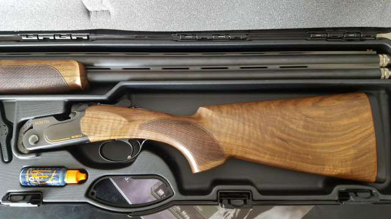

Es el arma de hombro de uno o dos cañones de ánima lisa, que se carga normalmente con cartuchos conteniendo perdigones. A diferencia de otras armas, el calibre de la munición de una escopeta normalmente no se mide en milímetros o centésimas/milésimas de pulgada. Se usa un sistema de pesos, de tal forma que el número refleja la cantidad de esferas iguales que pueden obtenerse con una libra de plomo, y cuyo diámetro coincide con el interior del cañón. Como es lógico, a menor número, más grande es el calibre. Por ejemplo, un calibre 20 significa que de una libra de plomo se pueden hacer 20 esferas, mientras que de un calibre 10 solo puedes sacar 10, por lo que el 10 es el doble de grande que el 20. Naturalmente, el tamaño de los perdigones que se cargan en el cartucho nada tienen que ver con el calibre. El calibre más común para caza y combate es el 12, siendo el 20 y el 10 otros bastante usados.
La escopeta yuxtapuesta está considerada como el arma de caza por excelencia. Los tiradores más clásicos todavía conservan el gusto por esta tradicional escopeta que ofrece unas grandes prestaciones en la caza de ojeo o en cobertura. Esta arma se caracteriza por disponer de dos cañones paralelos capaces de adaptarse a un gran número de calibres, siendo el número 12 uno de los más populares. En función de su báscula, se pueden diferenciar dos tipos de escopeta yuxtapuesta: la de llave de caja (más robusta y sencilla de usar) y la de llave paralela o pletina larga (más compleja y precisa). Gran parte de estas armas poseen doble gatillo, uno para cada cañón, aunque también son muy populares los modelos monogatillo.
Arma que se caracteriza por contar con dos cañones dispuestos uno encima del otro. Idónea para la caza al vuelo y el tiro al plato. Esta disposición permite que no se produzcan desplazamientos en el tiro ni que los cierres sufran torsiones. Los cañones cuentan con una dimensión media en torno a los 70 cm y se estrechan en la boca de salida, lo que aumenta su alcance considerablemente. Además, tal y como sucede con las yuxtapuestas, estas escopetas también soportan una amplia gama de calibres. En relación con las escopetas de cañones paralelos, las superpuestas suelen ser más precisas, ya que poseen un mayor campo visual y su encare resulta más sencillo.
Arma de un único cañón liso que permite un único disparo antes de cada recarga. Los amantes de la escopeta monotiro aseguran que este tipo de arma aumenta su poder de concentración antes de disparar, ya que saben que sólo van a tener una oportunidad de dar en el blanco. Así es esta arma: sólo concede un tiro antes de cada recarga. Esta escopeta se caracteriza por su ligereza (no supera los 3 kgs) y por la sencillez y robustez de su funcionamiento.
Mayoritariamente, los cazadores no suelen decantarse por la escopeta de cerrojo. Sin embargo, existen ciertas ocasiones en las que esta arma adquiere un notable protagonismo. Esto sucede sobre todo en cacerías de algunas poblaciones, en las que los cazadores intentan abatir jabalíes con balas Brenneke o de una sola posta. Con este tipo de munición, la escopeta de cerrojo puede ser efectiva en distancias cortas (entre 20 y 50 metros). Respecto a su funcionamiento, esta arma posee un mecanismo de acción similar al del rifle de cerrojo. La principal diferencia entre estas dos armas se encuentra en el cañón. En el caso del rifle, el ánima del cañón es rayada y en el caso de la escopeta es lisa. Por lo demás, se trata de dos armas bastante parecidas. La escopeta de cerrojo funciona mediante un sistema que debe ser accionado manualmente por el tirador. Después de disparar un cartucho, el tirador levanta el cerrojo y tira de él hacia atrás. Con este movimiento libera el cartucho vacío y deja preparado el siguiente. A continuación, el tirador corre el cerrojo hacia delante y hacia abajo para que el cartucho quede cargado y listo para ser disparado.
Arma de un único cañón capaz de disparar varios cartuchos de forma consecutiva. Permite un rápido encare y posee menos retroceso que una escopeta clásica. Es un arma fiable, versátil y con menos retroceso que las escopetas de dos cañones. Por el contrario, es menos elegante y más pesada si se encuentra completamente cargada. Existen dos modelos básicos de escopeta semiautomática. Por un lado, está la de cañón móvil, que aprovecha el retroceso para su rearme. Y, por otro, la que se recarga mediante un sistema de toma o sustracción de gases.
También denominada escopeta “de bombeo”, “de trombón” o “Pump Action”, la corredera es posiblemente la escopeta más conocida en todo el mundo. La principal característica de esta arma es su peculiar sistema de funcionamiento. La escopeta se recarga gracias a un rápido movimiento manual que permite deslizar de arriba hacia abajo un guardamanos especial. Esta acción expulsa el cartucho usado y recarga la cámara con un nuevo cartucho. En los últimos años, la escopeta de corredera se ha convertido en una de las principales armas de los cuerpos y fuerzas de seguridad, quienes encuentran en esta escopeta un arma fiable y eficaz.
Arma moderna que permite combinar la acción de la escopeta semiautomática con la utilización de la escopeta corredera. La escopeta semiautomática-manual es un arma moderna de un único cañón liso que combina el funcionamiento de dos armas complementarias. Así, el usuario de esta arma podrá elegir entre disparar con una semiautomática o bien hacerlo con una corredera. Dependiendo de la necesidad o de la preferencia del tirador, esta arma se convierte en una de las dos escopetas de forma rápida y sencilla. La función de escopeta corredera ofrece unos disparos menos potentes que la versión semiautomática, aunque es una opción más segura pues permite comprobar que el cargador tubular está totalmente vacío. En los últimos años ha crecido su popularidad, sobre todo entre las fuerzas policiales y los practicantes del tiro deportivo. La italiana Benelli M3 es el modelo de referencia de este tipo de escopeta.